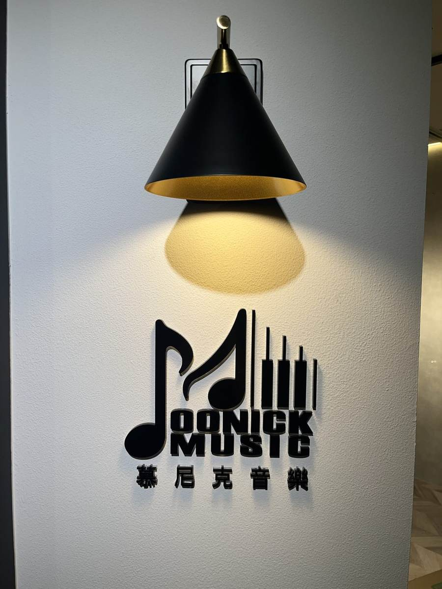
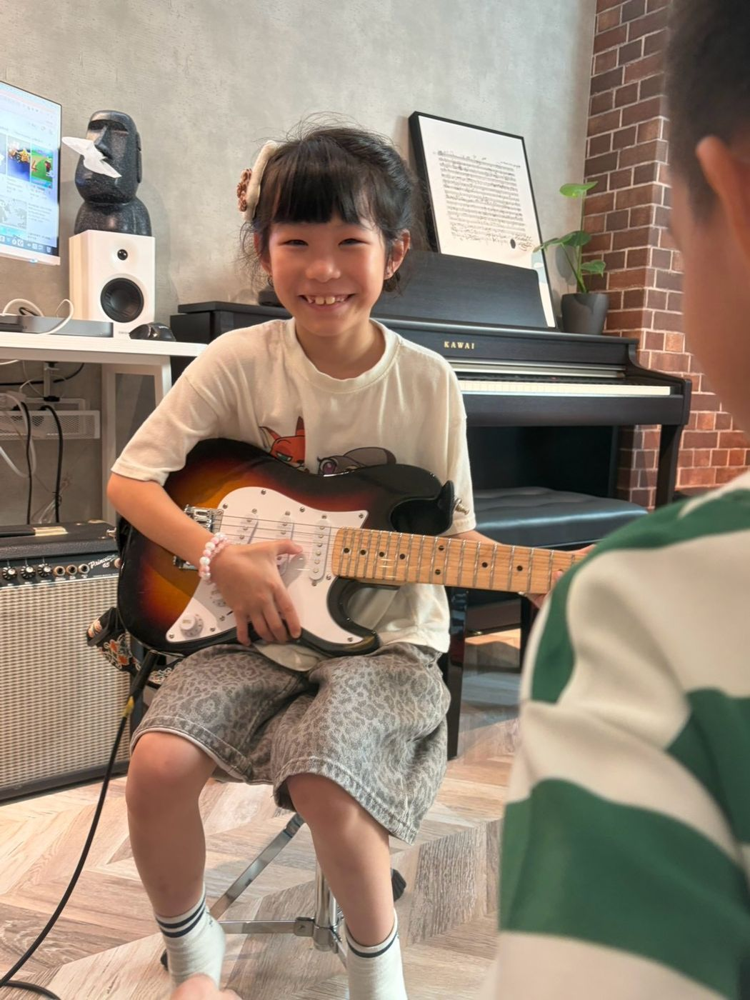
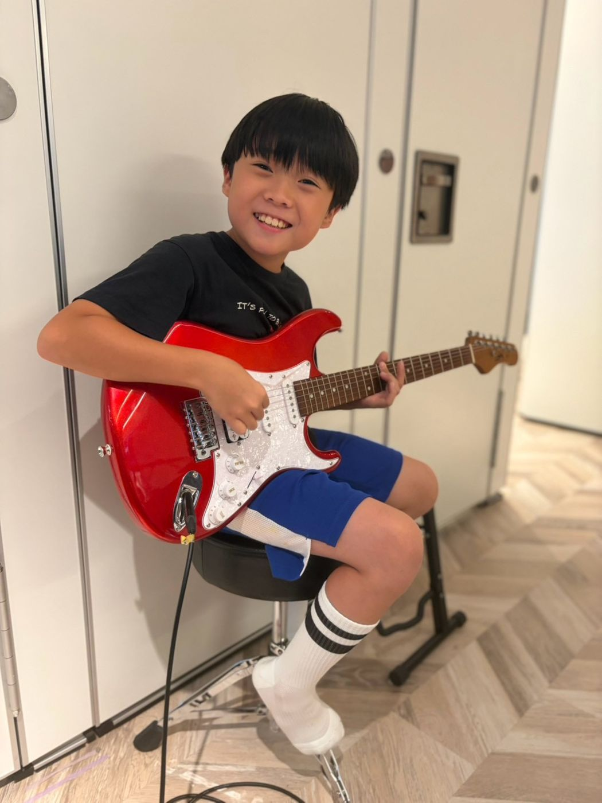
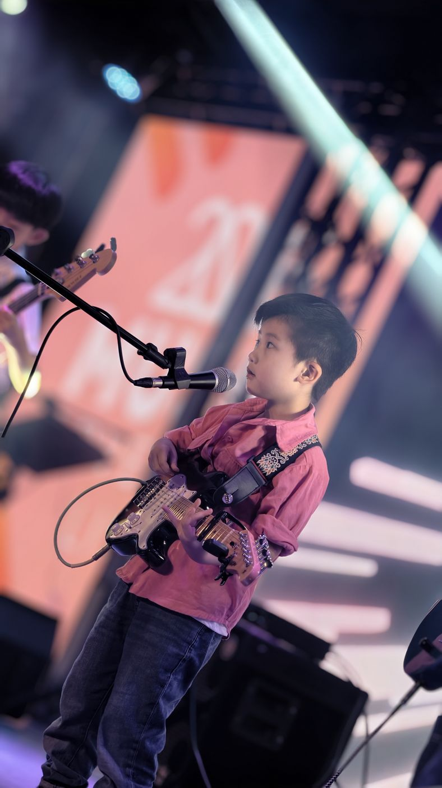
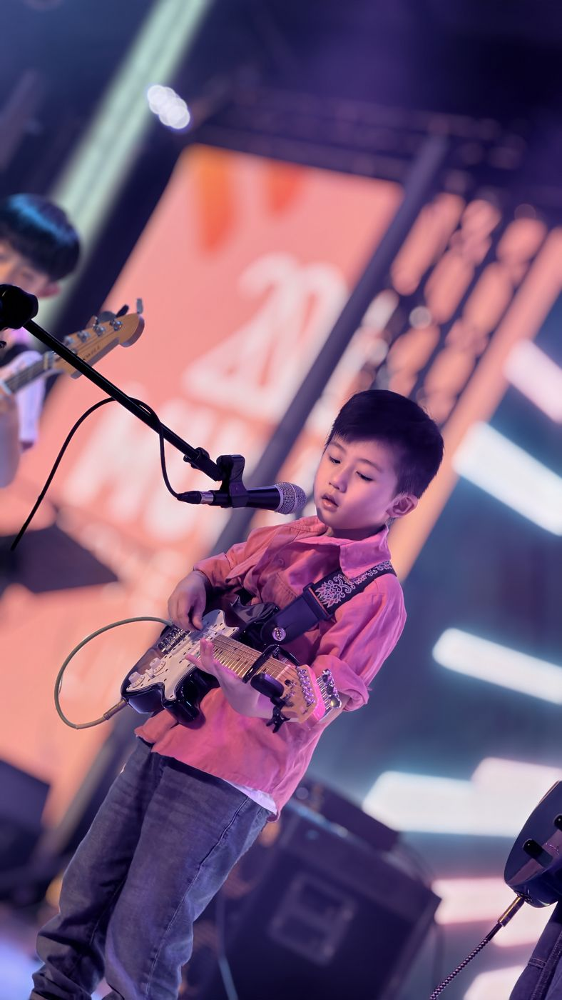

板橋吉他課｜兒童、成人都能學的木吉他・電吉他教學
想抱著木吉他自彈自唱，還是背起電吉他彈出帥氣的搖滾前奏？慕尼克音樂板橋校區（國光國小對面）提供兒童與成人木吉他、電吉他課程。還沒買琴也能直接來上課——我們不背枯燥的教本，而是從你最想彈的那首歌出發，帶你把和弦轉換與刷法練順，一期 12 堂課就能完整彈唱出自己的代表作！

吉他課適合誰
- 孩子：電吉他建議 6 歲以上，木吉他建議 8 歲以上。想彈喜歡的流行歌、動漫歌或電影主題曲，想跟同學組團，從和弦和節奏開始。
- 零基礎成人：沒按過和弦也上得了。出社會、晚上才有空的，時段看成人課程；退休、想彈老歌的，看樂齡專區。
- 自學卡關，或想轉電吉他的人：刷法、指法再站穩，或從木吉他換到電吉他。
先學木吉他還是電吉他
兩種都教。木吉他不插電，適合自彈自唱。電吉他要接音箱，弦較軟、弦距較低，對初學與小手的孩子更好按，也會練破音、Power Chord 和 Solo。還不確定要木吉他還是電吉他，先說出你想彈的那首歌，流行歌、動漫歌、電影主題曲都可以。還不知道想學什麼的話，第一堂課老師會介紹木吉他和電吉他的音色、各自用來做什麼，以及兩種音色彈起來的感覺，也會現場彈兩種琴給你看。
第一堂課，老師會拿不同尺寸的吉他讓學生抱抱看，確認身形適合哪個尺寸，再決定要買多大的。
買之前先看 5 個檢查點：想在板橋學吉他，先選木吉他還是電吉他？
第一期 12 堂學什麼
路線是固定的，老師照程度調整，不會每個人同一天進到同一首。
- 第 1–2 堂：調音、怎麼抱琴、拿 pick，按出第一個和弦
- 第 3–4 堂：換和弦，把節奏刷穩
- 第 5–8 堂：G 調與 capo。木吉他練分散和弦、切音、打板；電吉他練悶音、Power Chord 和短 Solo
- 第 9–12 堂：把一首歌彈完，自彈自唱，或和 Bass、爵士鼓合奏
想排這 12 堂，加入官方 LINE 問時段。
個人班和團體班
個人班是一對一，進度照這個人和目標來排，時段比較好挪。團體班和同伴一起學，可以練雙吉他合奏。人報得夠了才開班，想上就先在官方 LINE 問現在的時段。
一堂 50 分鐘，一期 12 堂。依規定請假，一期可以補課 3 次。
走進樂團合奏
吉他練到能跟拍，就可以和 Bass、爵士鼓、歌唱一起合奏。小江老師會依程度，把節奏吉他和主奏吉他排成兩個聲部。新北板橋校區不定期辦成果發表，學員可以上台。
樂團合奏由小江老師（江孟翰）帶。他自己也寫歌、做製作，作品超過兩百首。吉他課由小江老師、小佑老師帶。

親子樂團
慕尼克有親子樂團。爸爸、媽媽也可以背起吉他，和孩子編在同一個團，一起上台。怎麼參加，在官方 LINE 問。
教室環境

上課照片





上課地點與時間
地址：新北市板橋區中正路325巷47號1樓（國光國小正對面）
營業時間：週三、五 16:30–22:00；週四 14:00–22:00；週六、日 13:00–22:00；週一、二公休
交通：公車「307」，「港尾」站下車，走約 3 分鐘。捷運板橋站約 1.1 公里，騎 YouBike 約 5–7 分鐘。
停車：Times 中正路停車場走路約 2 分鐘，國光公園日月亭停車場走路約 4 分鐘。
同一間教室也有板橋爵士鼓課、新北板橋鋼琴課、板橋樂團班，還有板橋 Bass 課和板橋歌唱課。
常見問題
還沒買琴，可以先上課嗎？
可以。上課時教室有琴，不必先買。第一堂課，老師會拿不同尺寸的吉他讓學生抱抱看，確認身形適合哪個尺寸，再決定要買多大的。想進步，家裡有一把每天能拿起來的琴，會比較明顯。
手指按弦會痛是正常的嗎？
前兩三週指尖微痠很常見。老師會教省力的按弦角度，慢慢長出薄繭就不會痛。痛到受不了就先停，上課時告訴老師。
低年級先學木吉他還是電吉他？
電吉他建議 6 歲以上，木吉他建議 8 歲以上。兩種都有小一號。電吉他弦較軟、弦距較低，對初學與小手的孩子更好按。還不知道想學什麼的話，第一堂課老師會介紹木吉他和電吉他的音色、各自用來做什麼，以及兩種音色彈起來的感覺，也會現場彈兩種琴給你看。
吉他課一堂多久？一期幾堂？
一堂 50 分鐘，一期 12 堂。依規定請假，一期可以補課 3 次。時段請打手機 0939-239-219、市話 02-8965-2288，或加官方 LINE 問。非營業時間或老師帶學生演出時，市話可能無人接聽，請改撥手機。
新北板橋吉他課在哪裡上？
在新北市板橋區中正路325巷47號1樓，國光國小正對面。
想在板橋開始你的第一堂吉他課嗎？加入官方 LINE，告訴我們你最想彈唱的那一首歌。
在官網填表預約加入官方 LINE撥打 0939-239-219撥打 02-8965-2288非營業時間或老師帶學生演出時，市話可能無人接聽，請改撥手機。